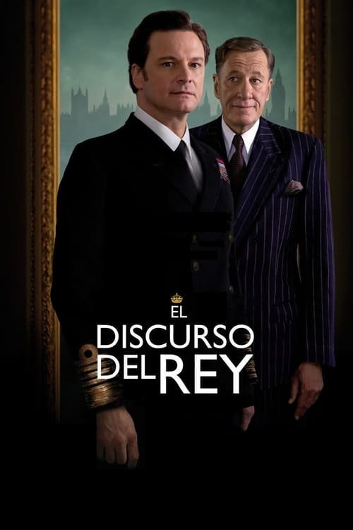

El discurso del rey (2010)

Plataforma: Disney+
Puntuación IMDb: 8.0/10
Duración: 1h 58m
Género: Drama Histórico
Sinopsis Rápida
Un rey con una tartamudez devastadora debe encontrar su voz para liderar una nación al borde de la guerra. ¿Podrá superar sus demonios internos y convertirse en el símbolo de esperanza que su pueblo necesita?
Sinopsis Detallada
{{SINOPSIS_EXTENDIDA}}
¿Por qué tenés que verla?
- Una historia inspiradora sobre la superación de la adversidad y la búsqueda de la propia voz.
- La actuación magistral de Colin Firth, aclamada por la crítica y premiada con un Oscar.
- Su impacto cultural radica en la normalización de la tartamudez y la humanización de la figura real.
- Una exploración fascinante de la relación entre un rey y su logopeda.
Idea Extra
Comparación de la representación histórica de Jorge VI en la película con registros históricos reales y biografías.